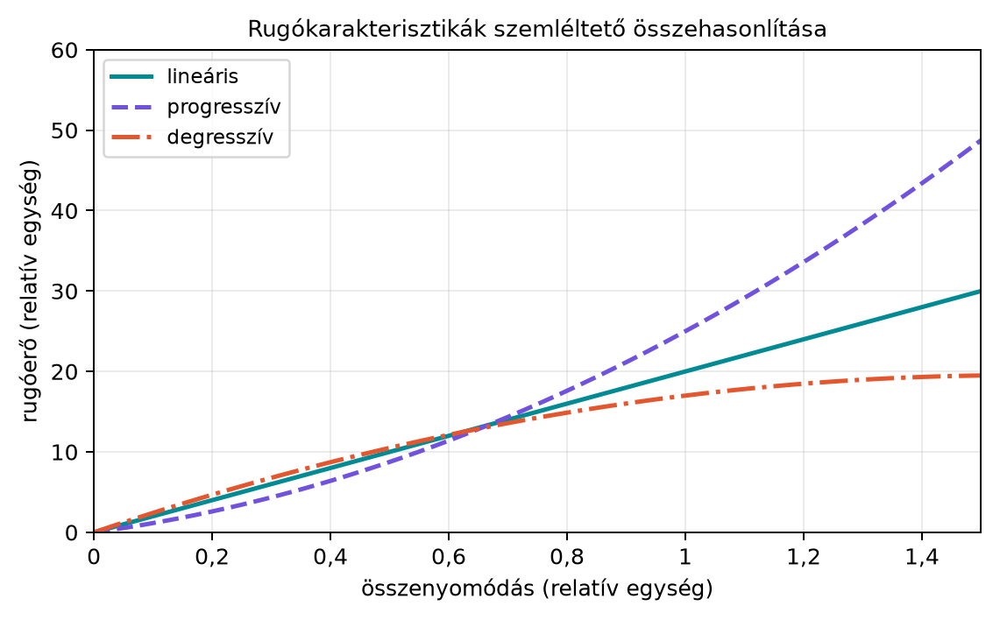

A szervizbe gyakran érkezik olyan autó, amelynél az ügyfél ezt mondja: „mintha oldalra ugrana a kátyún”, „zörög a futómű”, „hosszú úton libeg a hátsó rész”, vagy „a gumiabroncs egyenetlenül kopik”. Ilyenkor a hibát legtöbbször a futómű rugózó és csillapító elemeiben kell keresni, nem pedig azonnal a gumiabroncsban vagy a kerékcsapágyban. A rugó és a lengéscsillapító két, gyakran összekevert feladatot lát el: a rugó az ütéseket rugalmasan felveszi és a karosszéria magasságát, terhelését viseli, míg a lengéscsillapító a rugó által megindított lengéseket felemészti. Ebben az alfejezetben a rugózás és a lengéscsillapítás járműfutómű-szintű felépítését, jellemzőit, ellenőrzését és cseréjének előkészítését tanuljuk meg. Továbbvitt eredményként ezt fogjuk használni a Kerékfelfüggesztések, a Vizsgálati technológiák: fék, fényszóró, lengéscsillapítás, futómű holtjáték, ablakok, zaj és a Lengéscsillapító-vizsgálat és kerékkiegyensúlyozás alfejezetekben.
A legjobb, ha a járművet először egyetlen kerékre egyszerűsített negyed járműmodellként képzeljük el. Az útfelületről induló útprofil a gumiabroncsot, a keréktárcsát, a kerékagyat, a féktárcsát és a futómű bizonyos részeit mozgatja; ezt a tömeget nevezzük rugózatlan tömegnek. Erre a tömegre kapcsolódik a rugó és a vele párhuzamosan beépített lengéscsillapító, fölöttük pedig a karosszéria, az utasok, a motor és a csomag – vagyis a rugózott tömeg. A rugó összenyomódik, tehát erő–elmozdulás jelleggörbéje van; a lengéscsillapító viszont alapvetően sebességfüggő erőt fejt ki, ezért nyugalomban, állandó terhelésnél eszményi esetben nem tart erőt.
Az ábra bal oldalán a negyed járműmodell látható: a rugózott tömeg () alatt párhuzamosan a rugó () és a csillapító (), alattuk a rugózatlan tömeg és az abroncsrugó. A jobb oldali görbék a fejezet példájának adataival ( kg, N/mm, Hz) számoltak: gyenge csillapításnál a karosszéria sokáig leng, jó csillapításnál egy-két lengés után lecseng, túl erős csillapításnál lassan, rázósan követi az utat. A rugó szabja meg a lengés frekvenciáját, a csillapító a lecsengését. A HTML-változatban , és állítható, és a „kopott csillapító” kapcsoló a csillapítást felére csökkenti.
Az alábbi ábra három jellegzetes rugókarakterisztikát mutat: lineáris, progresszív és degresszív jelleg összehasonlítását. A valóságban a járműrugó karakterisztikája gyártófüggő, és azt a tervező a menetkényelem, a teherbírás és a keresztstabilitás alapján választja meg.

A vízszintes tengely az összenyomódás (terheletlen helyzethez képest), a függőleges tengely a rugóerő. A lineáris rugónál az erő az elmozdulással arányosan nő. A progresszív rugó először lágy, erős terhelésnél viszont egyre keményebb; a degresszív jelleg ennek fordítottja. Személyautókban gyakran a progresszív viselkedés kedvező, mert üresen kényelmes, megterhelve pedig nem ül le a karosszéria.
Definíció. A rugózott tömeg a jármű azon része, amelyet a rugók tartanak, és amely a rugalmas berendezés fölött lenghet: jellemzően a karosszéria, a motor, az utasok és a hasznos teher. A rugózatlan tömeg a rugó alatt elhelyezkedő, az útprofillal közvetlenül mozgó tömeg: keréktárcsa, gumiabroncs, kerékagy, fékszerkezet egy része, féltengely, futóműkarok egyes elemei. A tervezésben az a kedvező, ha a rugózott tömeg minél nagyobb a rugózatlan tömeghez képest, mert így az útprofilból származó gerjesztés kevésbé gyorsítja a karosszériát, és az abroncs jobban tapad.
Definíció. A rugómerevség az erőváltozás és az általa okozott alakváltozás-változás hányadosa:
Gyakori mértékegysége: vagy . A járművek rugójellemzői között fontos a statikus behajlás is: mekkora utat süllyed a karosszéria a hasznos terhelés hatására. A személyautók első rugózásánál a rugómerevség jellemzően néhányszor 10 N/mm nagyságrendű (például –), de típusfüggő (ellenőrizendő: gyártói adat). A fordított mértékegység (mm/N) az engedékenység, nem a merevség.
Összefüggés. Ha egy tömegű, csillapítás nélküli tömeg–rugó rendszerben a rugó merevsége , akkor a rendszer sajátfrekvenciája:
Definíció. A lengéscsillapító csillapítási tényezője az erő és a dugattyú-sebesség hányadosa:
A csillapító erő tehát , a csillapítási tényező mértékegysége : $\text{N}/(\text{m/s}) = \text{N\,s/m}$. A gyakorlati lengéscsillapítók nem lineárisak; a húzóoldali (kinyúlási) erő általában nagyobb a nyomóoldalinál: a lágyabb nyomóoldal kis erővel engedi a kereket az úthiba fölé (kényelem), a keményebb húzóoldal a rugó visszalökését, a karosszéria utólengését fékezi.
Definíció. A jármű lengésirányai: a karosszéria függőleges emelkedő–süllyedő lengése (heave), a hossztengely körüli dőlés (roll), a keresztirányú tengely körüli bólintás (pitch), valamint a függőleges tengely körüli elfordulás (yaw). A rugózás elsősorban az első három lengést befolyásolja; a kormányzás és az ívmenet során a dőlés és a bólintás a menetstabilitás szempontjából is fontos.
Acélrugók. A járművekben leggyakrabban az alábbi acélrugó-típusokkal találkozunk:
Az ábra a felsorolt rugóelemeket a beépítési helyükkel mutatja (a rugóelem vastag vonallal, a környező futómű halványszürkén): a csavarrugót a McPherson-tag rugótányérjai között, a laprugót rugófüllel, rugóbakkal és rugókengyellel a merev hídon, a torziós rudat a lengőkar forgáspontjában, a stabilizátort gumiágyazással és összekötő rudakkal, valamint a lenti szakaszban tárgyalt légrugót és ütközőgumit. A HTML-változatban rámutatásra megjelenik, mit terhel az elem, és hogyan romlik el.
A rugók anyaga edzett rugóacél, felületük gyakran lakkozott vagy bevonatos. A korrózió, a kőfelverődés és a fáradás hatására menetszakadás, laprugónál réteges törés alakulhat ki.
Lengéscsillapító feladata. A csillapító nem a terhet viszi, hanem a rugó által megindított lengést alakítja hővé. Fő alkatrészei: henger, dugattyú, dugattyúrúd, szelepek, olaj, tömítések és adott esetben gáztöltet. A dugattyú mozgásakor az olaj szelepeken áramlik át, a keletkező szűkületek és áramlási veszteségek disszipálják az energiát.
Az ábrán húzáskor az olaj a dugattyú szelepein át lefelé áramlik; a kétcsövesnél a hiányzó rúdtérfogatot a fenékszelepen át a kiegyenlítő tér pótolja, az egycsövesnél az elválasztó (úszó) dugattyú mozdul el, és a gáztér veszi fel a különbséget. Nyomáskor az olaj a dugattyún át felfelé áramlik, a rúd által kiszorított olajat a kétcsövesnél a fenékszelep a kiegyenlítő térbe engedi, az egycsövesnél a nitrogén összenyomódik. A HTML-változatban a négy állapot között váltva, rámutatásra az alkatrészek neve is megjelenik. - Jelleggörbe: a lengéscsillapító erő–sebesség görbéje. A húzóoldali (kinyúlási) erő általában nagyobb a nyomóoldalinál: a lágyabb nyomóoldal kis erővel engedi a kereket az úthiba fölé, a keményebb húzóoldal a rugó visszalökését és a karosszéria utólengését fékezi. A pontos jelleggörbét a gyártói katalógus és a tesztpad mérése adja.
A szintszabályzós rendszer a karosszéria magasságát terhelésváltozás esetén is közel állandó értéken tartja. A légrugós járműveken ezt a kompresszor és a magasságszenzorok teszik lehetővé; a nyomásszabályzással a rugómerevség is bizonyos határok között változtatható.
Az elektronikusan állítható lengéscsillapító a csillapítási karakterisztikát menet közben módosítja. Ennek egyik elvi megoldása, hogy a csillapító szelepeit elektromos hajtás vagy mágnesszelep fojtja, így a vezérlőegység a kényelmes, normál vagy sportos beállítás közt vált. Egy másik, ritkább megoldás a mágnesorheológiai folyadék, amely mágneses tér hatására megváltoztatja viszkozitását. Az ilyen rendszerek járműhálózaton, például CAN-buszon kapcsolódnak a vezérlőegységhez, és gyorsulás- vagy magasság-szenzorok jelét is felhasználják. Javításukhoz a gyártói diagnosztikai és kódolási eljárás kell.
Példa. Rugómerevség számítása.
Adott: egy első kerékre jutó rugózott terhelés . A rugó statikus behajlása .
Keresett: a rugó merevsége.
Számítás:
Ellenőrzés: lássuk meg, hogy ha a terhelés megduplázódna, a behajlás is megduplázódna. Ez a lineáris rugó feltételezésénél így van. A kapott érték nagyságrendileg reális egy személyautó első rugójára. ∎
Példa. Sajátfrekvencia számítása.
Adott: egy sarokra jutó rugózott tömeg , a rugó merevsége .
Keresett: a rugózott rendszer sajátfrekvenciája.
Számítás:
Ellenőrzés: a személyautók tipikus rugózási sajátfrekvenciája – körüli. A kapott érték ebbe a tartományba esik. ∎
Példa. Lengéscsillapító erő.
Adott: egy lengéscsillapító csillapítási tényezője $d = 1500\,\text{N\,s/m}$. A dugattyú sebessége .
Keresett: a csillapító erő .
Számítás:
$$F=d\,v=1500\,\frac{\text{N\,s}}{\text{m}}\cdot 0{,}5\,\frac{\text{m}}{\text{s}} = 750\,\text{N}$$
Ellenőrzés: a mértékegység átváltása után valóban -t kapunk. Ez a nagyságrend a gyorsabb kerékmozgásoknál jelentkező csillapítóerőt mutatja. ∎
Előírás. A közúti járművek időszakos műszaki vizsgálatán a lengéscsillapítók hatásosságát lengéscsillapító-vizsgáló berendezéssel is ellenőrzik; a vizsgálati módszert és a megfelelőségi határokat a hatályos hazai vizsgaelőírás, valamint a gyártói vizsgálati adatok tartalmazzák (ellenőrizendő: 5/1990. (IV. 12.) KÖHÉM rendelet és módosításai). Biztonsági szempontból a rugó, a lengéscsillapító, a stabilizátor és a futómű bekötési elemei csak a gyártói javítási utasítás szerint, megfelelő célszerszámokkal és előírt meghúzási nyomatékokkal szerelhetők.
A műhelyi ellenőrzés lépései:
Valós eset. Egy személyautó a műszaki vizsgára való felkészítés során kerül szervizbe. Az ügyfél panasza szerint rossz minőségű úton a hátsó rész „idegesen”, a kormányzott első rész „elkalandozik”. A szervizben először a gumiabroncsnyomást és a futómű bekötéseit ellenőrzik, majd a lengéscsillapító-teszten a bal első 74%, a jobb első 51%, a hátsó tengely jobb oldala 39% értéket mutat (ezek tanulási példák; a konkrét határérték gyártó- és vizsgálati adat). A műhelyi értékelés alapján a jobb első és a jobb hátsó lengéscsillapító erősen csökkent hatásosságú. A szemrevételezés a jobb hátsó csillapítón olajfolyást, a jobb elsőn korrodált dugattyúrudat mutat. A hiba oka a kopott dugattyúszimmering és a munkacső belső felületi kopása, ezért az olaj eltávozott, a csillapítóerő leest. A javítás során a tengelyenként páros csillapítócsere mellett a rugótányérokat és a gumibekötéseket is ellenőrzik, majd új önzáró anyákat használnak a gyártói előírás szerint (ha a gyártó előírja). A beépítés után a járművet újra vizsgálják: a tesztpad már közel egyenletes oldalarányt mutat, a próbaúton a futóműzaj és az oldalirányú bizonytalanság megszűnik. Tanulság: a kopott lengéscsillapító nem csak kényelmi hiba; növeli a fékutat, rontja a tapadást és a kerékterhelés-ingadozást, ezért a műszaki vizsgán is megbukhat.
Cél: a futómű rugó és lengéscsillapító elemeinek járművön történő ellenőrzése, csere előtti felkészítése.
Jármű- és adatazonosítás: alvázszám, típus, futómű-változat; a gyártói javítási utasítás és a szükséges meghúzási nyomatékok kikeresése.
Szerszámok, mérőeszközök, anyagok: emelő vagy emelőasztal, biztonsági bakok, kerékoldás, rugóösszenyomó (ahol a gyártó előírja), nyomatékkulcs, ütvecsavarozó, kerékbeállításhoz mérőeszköz vagy előjegyzés, új rögzítőelemek, szemrevételezéshez munkalámpa, egyéni védőeszköz.
Biztonsági korlát. A feladat tanműhelyi környezetre, oktató felügyeletére és a gyártói javítási utasítás betartására vonatkozik; a megadott értékek tanulási példák. A jármű alá csak mechanikusan reteszelt műhelyi járműemelőn vagy bakra támasztva szabad bemenni; a kocsiemelővel tartott jármű alá bemenni tilos. A feszített rugót tilos oldani vagy a rugótányért önkényesen megbontani; a McPherson típusú egységet csak a gyártó által előírt, megfelelő állapotú rugóösszenyomóval szabad megfogni.
Számozott lépések:
Környezetvédelem. Az olajos lengéscsillapítót és a kifolyt olajat veszélyes hulladékként kell gyűjteni (a gáztöltésű csillapítót is a hulladékszabályok szerint, nyomásmentesítés után adjuk le); a fémrugó fémhulladék. A csillapítót sose égesd el, mert a gáznyomás miatt robbanhat. A sérült hidraulikus vagy légrugó rendszert a gyártói nyomásmentesítés után, olajfelfogó edénnyel szereld.
1. feladat (A). Fogalmazd meg a rugó és a lengéscsillapító eltérő feladatát.
2. feladat (A). Számítsd ki a rugómerevséget, ha erő hatására a rugó -t nyomódik össze.
3. feladat (B). Egy kerékre jutó rugózott tömeg , a rugómerevség . Számítsd ki a sajátfrekvenciát.
4. feladat (B). Lengéscsillapító csillapítási tényezője $d=1200\,\text{N\,s/m}$. Mekkora erőt fejt ki dugattyúsebességnél? Miért nem ad ez teljes képet a gyakorlatban?
5. feladat (C). Magyarázd el, miért kedvező a futóműben, ha a rugózott tömeg nagy a rugózatlan tömeghez képest, és miért alkalmaznak progresszív rugókarakterisztikát a csomagtartós személyautóknál.
6. feladat (D). A lengéscsillapító-teszten a bal első 72%, a jobb első 46%, a bal hátsó 61%, a jobb hátsó 44% értéket mutat. A szemrevételezés a jobb első csillapítón olajnyomokat mutat. A műszaki vizsgán a jármű „lengéscsillapító hatásosság gyenge” bejegyzést kaphat. Milyen további vizsgálatot és javítást javasolsz? Indokold a tengelyenkénti csere fontosságát.
1. feladat (A). A rugó az ütéseket rugalmasan felveszi, a karosszéria terhelését hordozza, és visszaadja a tárolt energiát. A lengéscsillapító a rugóval együtt rezgő rendszer energiáját hővé alakítja, így a lengés hamar lecseng.
2. feladat (A).
A rugómerevség . ∎
3. feladat (B).
A sajátfrekvencia körülbelül . ∎
4. feladat (B).
A gyakorlatban a csillapító erősebesség-jelleggörbéje nem lineáris, és húzó/nyomó irányban eltér, ezért az egyetlen érték csak közelítés. ∎
5. feladat (C). A nagyobb rugózott tömeg azt jelenti, hogy az útfelületről jövő erőhatás a kisebb rugózatlan tömegnek nagyobb gyorsulást ad, mint a nagyobb rugózott tömegnek. A kisebb rugózatlan tömeg így az abroncsot hamarabb, kisebb kerékterhelés-ingadozással tartja az úton, ami javítja a tapadást. A progresszív rugó üresen lágyabb, ezért kényelmes; megterhelve pedig meredekebbé válik, ezért a karosszéria nem ül le, és a rugóvégütközés elkerülhető. ∎
6. feladat (D). A legnagyobb eltérés a jobb oldalon látható, ezért a jobb elsőt és a jobb hátulsó csillapítót gyanúba kell venni. A jobb elsőn lévő olajfolyás a csillapító tömítetlenségére utal. Javasolt további lépések: szemrevételezés, rugóztatás, a futómű bekötéseinek ellenőrzése, majd a tengelyenkénti csillapítócsere. A tengelyenkénti cserét az indokolja, hogy a bal és jobb oldali eltérő csillapítás aszimmetrikus lengés- és fékerő-megoszlást okoz, ami rontja a menetstabilitást és a fékutat. A csere után a tesztpadi érték ellenőrzése és próbaút szükséges. ∎
A rugó és a lengéscsillapító kiegészíti egymást: a rugó rugalmasan tárolja az ütési energiát és viseli a karosszéria terhelését, a lengéscsillapító pedig a kialakult lengéseket disszipálja. A rugómerevség ; a csillapítási tényező . A rugó–tömeg rendszer sajátfrekvenciája . A személyautókon a csavarrugó, a haszonjárműveken a laprugó és a légrugó jellemző; a stabilizátor a dőlés ellen csavaró rúdként dolgozik. A lengéscsillapító egy- vagy kétcsöves kivitelű, a gáztöltésű egycsöves kivitel jobban tűri a tartós igénybevételt. A kopott csillapító jele a futóműzaj, a hintázó karosszéria, az egyenetlen abroncskopás és a tesztpadi gyenge oldalarány. A cserénél mindig a gyártói javítási utasítás, a megfelelő rugóösszenyomó és az új rögzítőelemek használata a biztonság alapja. Továbbvitt eredmény. A rugó- és csillapító-jellemzők, az ellenőrzési tünetek és a tesztpadi kiértékelés ismeretét felhasználjuk a Kerékfelfüggesztések, a Vizsgálati technológiák: fék, fényszóró, lengéscsillapítás, futómű holtjáték, ablakok, zaj és a Lengéscsillapító-vizsgálat és kerékkiegyensúlyozás alfejezetekben.
A fejezet a rugómerevségre, a lengéstani összefüggésekre és a lengéscsillapító működési elvére vonatkozó mechanikai alapokra épít. Az alábbi pontok ellenőrzést igényelnek a kiadás előtt: